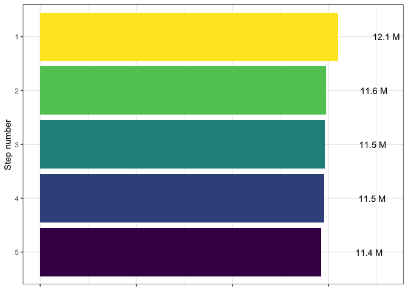

2 Pre-harmonization decision process
step_order_rev <- max(documented_drops$order):min(documented_drops$order)
documented_drops %>%
group_by(step) %>%
mutate(scaled = scale(n_rows, center = FALSE)) %>%
ungroup() %>%
mutate(order = factor(order,
levels = step_order_rev),
rows_label = paste0(round((n_rows / 1000000), 1), " M")) %>%
filter(step == "pre-harmonization") %>%
ggplot() +
geom_bar(aes(x = order, y = scaled, fill = order),
stat = "identity") +
geom_text(aes(x = order, y = scaled + 0.15, label = rows_label)) +
xlab("Step number") +
ylab(NULL) +
scale_fill_viridis_d() +
coord_flip() +
theme_bw() +
theme(axis.text.x = element_blank(),
legend.position = "none")